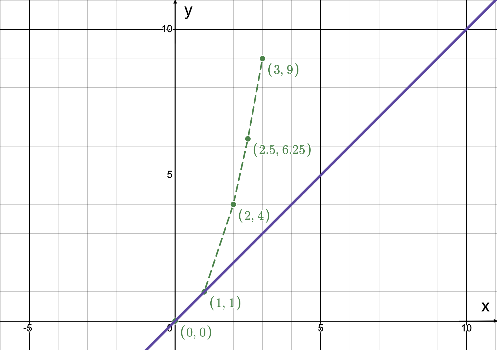
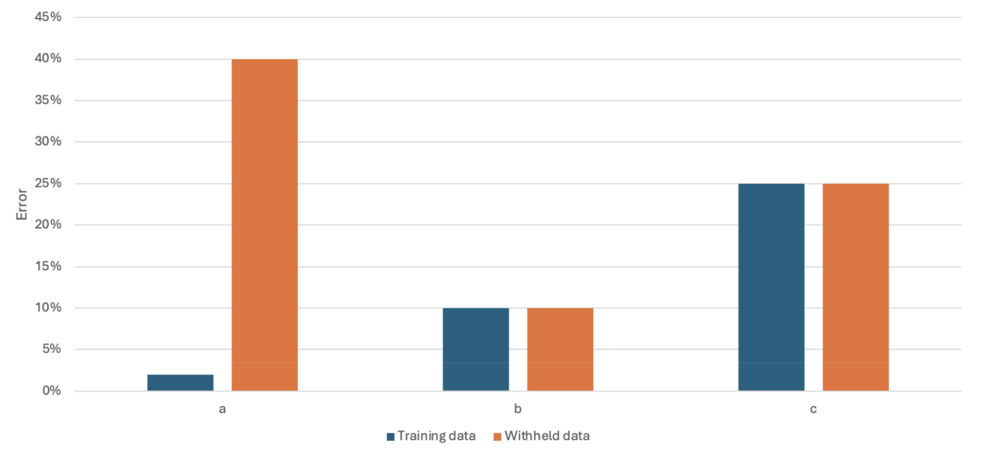
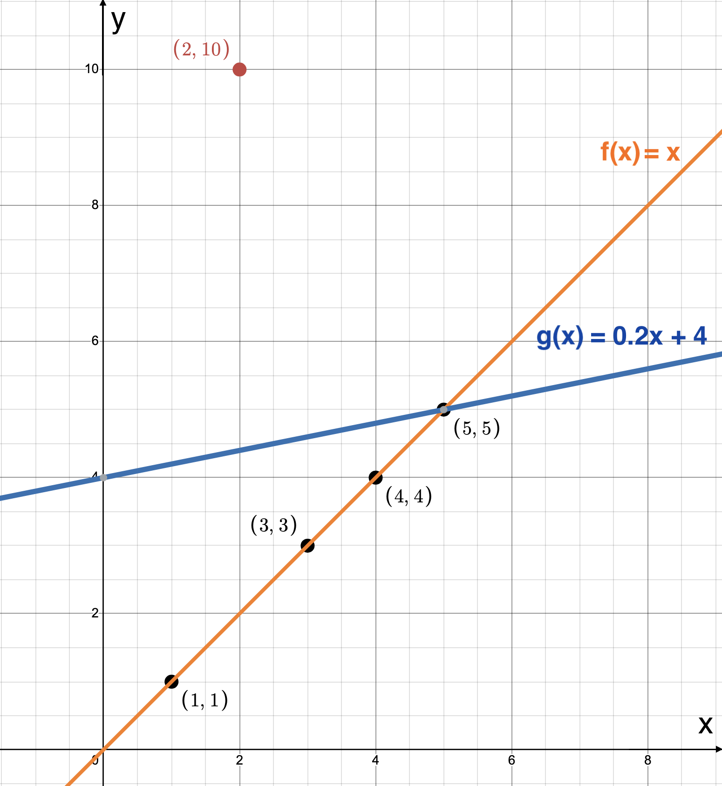
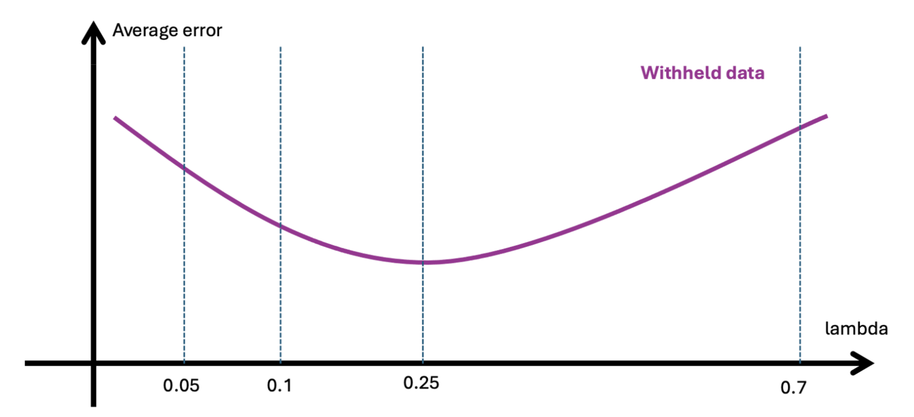

Regression - Answers
- In the crop yield example, which of the following is/are independent variable(s)?
- Acidity
- Temperature
- Rainfall
Explanation: Acidity, Temperature and Rainfall are the features used to predict Crop Yield.
- In the real estate example, which of the following is/are the dependent variable(s)?
- Sale price
Explanation: In this example, we try to predict sale price based on # of rooms, Square footage, age of the home.
- Given a parametric model, which of the following are we trying to find through training a model?
- \(\theta\) - parameter vector
Explanation: We are trying to fing \(\theta\) that would minimize \(\mathcal{L}(\theta)\) on training data which is pairs of features and tru predictions.
- Which of the following parametric models are linear?
- \(Ax\)
Explanation: \(Ax\) is a linear model while \(Ax+b\) is an affine model otherwise called a linear model with bias.
- Which of the following graphs describes a model underfitting the data?
(b)
Explanation: Graph b is the only one that underfits the data. The other two options fit the given data points perfectly.
- Which of the following is an incorrect way to describe a model that overfits?
- A model that does not perform well on the training dataset
Explanation: If a model overfits, it tries to follow the training data too closely, so it does not generalize well.

- Which of the following bargraph pairs describes overfitting?
(a) a
Explanation: If a model overfits, it performs well on the training data, but performs poorly on the withheld data.

- Calculate \(L^1\) loss for the following data [(1, 1), (2, 10), (3, 3), (4, 4), (5, 5)] \(f_\theta(x) = x\)
\(\frac{8}{5} = 1.6\)
Explanation: \(L^1(\theta) = \frac{1}{N} \sum_{i=1}^N |f_{\theta}(x^{(i)}) - y^{(i)}|\).
\(L^1(\theta) = \frac{|1-1|+|2-10|+|3-3|+|4-4|+|5-5|}{5} = \frac{8}{5}\)
- Calculate \(L^1\) loss for the following data [(1, 1), (2, 10), (3, 3), (4, 4), (5, 5)] \(g_\theta(x) = 0.2x+4\)
\(2.24\)
Explanation: \(L^1(\theta) = \frac{1}{N} \sum_{i=1}^N |f_{\theta}(x^{(i)}) - y^{(i)}|\).
\(L^1(\theta) = \frac{|4.2-1|+|4.4-10|+|4.6-3|+|4.8-4|+|5-5|}{5} = 2.24\)
- Which of the following models would you choose based on the \(L^1\) losses calculated?
(a) \(f_\theta\)
Explanation: \(f_\theta\) produced a smaller error (1.6) compared to \(g_\theta\) (2.24), so \(f_\theta\) is better according to \(L^1\) loss.
- Calculate \(L^2\) loss for the following data [(1, 1), (2, 10), (3, 3), (4, 4), (5, 5)] \(f_\theta(x) = x\)
\(\frac{64}{5} = 12.8\)
Explanation: \(L^2(\theta) = \frac{1}{N} \sum_{i=1}^N (f_{\theta}(x^{(i)}) - y^{(i)})^2\).
\(L^2(\theta) = \frac{(1-1)^2+(2-10)^2+(3-3)^2+(4-4)^2+(5-5)^2}{5} = \frac{64}{5}\)
- Calculate \(L^2\) loss for the following data [(1, 1), (2, 10), (3, 3), (4, 4), (5, 5)] \(g_\theta(x) = 0.2x+4\)
\(\frac{64}{5} = 8.96\)
Explanation: \(L^2(\theta) = \frac{1}{N} \sum_{i=1}^N (f_{\theta}(x^{(i)}) - y^{(i)})^2\).
\(L^2(\theta) = \frac{(4.2-1)^2+(4.4-10)^2+(4.6-3)^2+(4.8-4)^2+(5-5)^2}{5} = 8.96\)
- Which of the following models would you choose based on the \(L^2\) losses calculated?
(b) \(g_\theta\)
Explanation: \(g_\theta\) produced a smaller error (8.96) compared to \(f_\theta\) (12.8), so \(g_\theta\) is better according to \(L^2\) loss.
- Which of the following losses would you use to train a model so the model tries to minimize the effect of the outliers?
(a) \(L^1\)
Explanation: Since \(L^1\) loss is less sensitive to outliers, it was able to produce model that follows more closely our intuition on what the right linear model would be for the given datapoints. Compared to \(L^2\) loss, model trained with \(L^1\) loss tries to minimize the effect of the outliers more.
- How to minimize ignorance of the minority group in mean-squared loss?
(b) Use a weighted average, where the minority is weighted more
Explanation: By weighing more the data points that are represented less in the training dataset, we make the loss more sensitive to these datapoints. If we weigh all data points equally, then majority group can overpower the minority by driving loss closer to zero.
- In the following formula, what can we not say about \(\lambda\)?
\(\mathcal{L} (\theta) = \frac{1}{N} \sum_{i=1}^N (f_{\theta}(x^{(i)}) - y^{(i)})^2 + \lambda \mathcal{R} (\theta) \)
As a result of training our model, we find \(\theta\) and \(\lambda\)
Explanation: As a result of training a model with a regularized loss, we still only find \(\theta\). \(\lambda\) is only a hyperparameter used to help find an optimal \(\theta\) and is not used for model prediction.
- What are the main ways we learned how to fix overfitting in this class?
Add a regularizer to the loss
Use Early stopping
Explanation: Increasing complexity of a model usually can lead to more overfitting, unless we reach complexity of deep neural networks, which will be discussed in later videos. For more (bonus) information, here is an article explaining how increasing complexity of a model can lead to a better model. Mean-squared error is not regularized, so it would produce the same model that overfits.
- Which of the following regularizers encourages \(\theta_i \rightarrow 0\) for some i.
\(\sum_{i=1}^k |\theta_i|\)
\(L^1\) Regularization
Explanation: \(L^1\) Regularization is \(\sum_{i=1}^k |\theta_i|\) (otherwise, called Sparsity Regularization) and it encourages sparse \(theta\) so \(\theta_i \rightarrow 0\) for some i. Weight Decay Regularization is \(\sum_{i=1}^k \theta_i^2\) and it makes sure all the weights are on a similar scale.

- Which lambda would you choose, given the following graph for error output on the withheld data?
(c) 0.25
Explanation: \(\lambda\) is chosen such that error is minimized on withheld data. In this case, the error is minimized when \(\lambda=0.25\).